239
UNIDADE 7 - CAPÍTULO 3
CAPÍTULO 3 - Razão e porcentagem
Internet
A origem da rede que interliga computadores em todo o planeta, possibilitando a troca de informações em tempo real, está relacionada com o ambiente da Guerra Fria, nos anos de 1960, quando os Estados Unidos e a União Soviética disputam a hegemonia militar, econômica e ideológica. Num ambiente de tensão pela ameaça de confronto entre essas duas grandes potências mundiais, cresce no Departamento de Defesa norte-americano a preocupação com o fato de toda a comunicação das Forças Armadas do país estar centralizada em um único computador, no complexo do Pentágono. Para evitar que o sistema militar norte-americano entrasse em colapso na hipótese de um ataque soviético ao Pentágono, uma agência ligada ao Departamento de Defesa, a Advanced Research Projects Agency (Arpa), desenvolve um projeto de interligação a distância entre computadores de várias universidades norte-americanas. [...]
[...] Em 1989, o engenheiro inglês Tim Berners-Lee, do Centro Europeu de Pesquisa Nuclear (Cern) - a mesma instituição que é responsável pelo superacelerador de partículas LHC -, lidera uma equipe que cria um padrão para organizar informações em texto e imagem. O formato de hipertexto mantém as informações interligadas e permite a consulta de dados em outros documentos sobre o mesmo assunto. É a origem do “http”, abreviação em inglês para “protocolo de transferência de hipertexto”. Ainda no início da década de 1990, Berners-Lee segue desenvolvendo seu padrão para ele ser usado mundialmente e lança a “word wide web” - algo como “rede mundial”, em inglês - que se transforma no sistema pelo qual circulam as infor- mações organizadas em hipertexto. [...]
240
UNIDADE 7 - CAPÍTULO 3
Internet chega a oito em cada dez domicílios do País
Em 2019, a Internet era utilizada em 82,7% dos domicílios brasileiros. A maior parte desses domicílios fica concentrada nas áreas urbanas das Grandes Regiões do país, conforme mostra o gráfico abaixo:
![Gráfico de barras horizontais intitulado “Domicílios em que havia utilização da internet, por situação do domicílio (%)”. Legenda para as cores das barras: azuis: total; ocre: urbana; verde: rural. No eixo vertical, de baixo para cima estão as regiões brasileiras: Centro-Oeste, Sul, Sudeste, Nordeste, Norte; e o Brasil. No eixo horizontal são apresentadas as barras com a concentração dos domicílios com suas porcentagens:
Centro-Oeste: 62,1% na zona rural; 88,9% na área urbana; 86,4% total.
Sul: 67,2% na zona rural; 87,5% na área urbana; 84,9% total.
Sudeste: 64,6% na zona rural; 88,8% na área urbana; 87,3% total.
Nordeste: 51,9% na zona rural; 81,3% na área urbana; 74,3% total.
Norte: 38,4% na zona rural; 86,5% na área urbana; 76% total.
Brasil: 55,6% na zona rural; 86,7% na área urbana; 82,7% total.](../../resources/images/unidade7/capitulo3/imagem2.png)

1. Troque ideias com um colega e façam o que se pede:
a) O que significa dizer que 82,7% dos domicílios do Brasil têm acesso à internet?
b) Em qual região houve mais acesso? E em qual região houve menos acesso?
c) As porcentagens que representam os acessos da zona rural podem ser escritas na forma de números fracionários. Escrevam-nas no caderno.
A expressão por cento vem do latim per centum, que significa “divisão por 100”.
Porcentagem é uma razão entre um número n e 100, representado por \(\dfrac{1}{100}\) ou n%.
Observe a seguinte situação:
Vinícius foi ao shopping comprar uma calça e percebeu que se comprasse à vista teria 8% de desconto. Quanto ele pagará pela calça?
Calculando 8% de R$ 78,50, temos:
8% de 78,50 corresponde a \(\dfrac{8}{100} \cdot 78,50 = \dfrac{628}{100} = 6,28\)
Portanto, o preço da calça será de R$ 78,50 - R$ 6,28 = R$ 72,22.
241
UNIDADE 7 - CAPÍTULO 3
Esta é apenas uma das formas que podemos usar para realizar esse cálculo. Vejamos agora outra forma, utilizando uma regra de três:
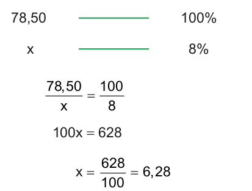Nesta forma de resolver o problema, calculamos quanto representa 8% de R$ 78,50 e subtraímos do total para sabermos quanto ele iria pagar pela calça. Porém, também podemos pensar que se o desconto foi de 8%, o valor que será pago pela calça corresponde a 92% do preço total. Utilizando esse raciocínio veja como ficaria o cálculo:
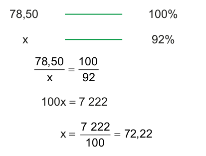Portanto, o valor a ser pago pela calça é R$ 72,22.
Nessa forma de resolver o problema, obtemos direto o valor a ser pago.
ENCONTRE SOLUÇÕES
1. Escreva, em seu caderno, as porcentagens abaixo em forma de números fracionários.
a) 37%
b) 8,5%
c) 0,7%
d) 85%
2. Em seu caderno, represente as porcentagens na forma de números decimais.
a) 46%
b) 12,7%
c) 0,5%
d) 63%
242
UNIDADE 7 - CAPÍTULO 3
3. Escreva, em seu caderno, a porcentagem que corresponde a cada uma das razões a seguir.
a) \(\dfrac{11}{100}\)
b) \(\dfrac{1}{2}\)
c) \(\dfrac{3}{4}\)
d) \(\dfrac{1,6}{25}\)
4. Vamos relembrar como utilizar a calculadora para calcular uma porcentagem.

Calculando 45% de 1 500 usando a calculadora:
► digite 1 500 e tecle x ;
► digite 45 e tecle % ;
► tecle = .
Qual é o resultado encontrado?
Agora, calcule as demais porcentagens:
a) 34,5% de 560
b) 0,8% de 120
c) 9,2% de 244
d) 56% de 605
5. Calcule mentalmente e escreva os resultados em seu caderno.

a) 10% de R$ 550,00
b) 20% de R$ 400,00
c) 25% de R$ 800,00
d) 50% de R$ 630,00
e) 90% de R$ 500,00
f) 100% de R$ 245,00
g) 110% de R$ 200,00
h) 150% de R$ 100,00
i) 300% de R$ 150,00
6. Em uma excursão realizada no colégio de Marisa, 15% dos alunos faltaram no dia. Sabendo que estava programado a presença de 60 alunos, quantos faltaram?
7. Mônica esqueceu de pagar uma conta de R$ 120,00 e agora terá que pagar 2% de juros ao dia por atraso. Qual é o valor total da fatura que ela irá pagar, sabendo que a conta está atrasada a 3 dias?
8. Rafael comprou um fogão no valor de R$ 678,50 à vista e conseguiu um desconto de 10%. Quanto ele pagou pelo fogão?
9. Uma máquina depois de usada sofre uma desvalorização de 12% e então é avaliada em R$ 17.600,00. Qual era o valor dessa máquina antes de ser usada?
10. O passe de um jogador de futebol foi vendido por 5 milhões de reais. Quanto receberá o clube desse jogador, sabendo que 18% do valor do passe pertence ao jogador?
243
UNIDADE 7 - CAPÍTULO 3
11. Observe os preços de uma loja de roupas:
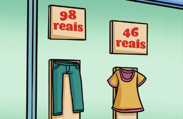Elabore, em seu caderno, um problema a partir dos preços de cada peça de roupa, envolvendo o conceito de porcentagem e propondo um desconto. Em seguida, troque o caderno com seu colega para que um resolva o problema do outro e, juntos, verifiquem se as resoluções propostas estão corretas.

12. Observe o boleto a seguir:
![Ilustração de um boleto, uma tabela com duas colunas e o texto:
Banco 237-2 23791.11103 60000.000103.222206 1 48622000000000
Coluna 1:
Local de pagamento: Pagável em qualquer banco
Cedente: Camilo Móveis Rústicos
Data do documento: 05/02/2022
Nº documento: NF 1 1/1
Espécie doc.
Aceite N
Data processamento: 05/02/2022
Uso do banco
Carteira: 06
Espécie: R$
Quantidade
(x) Valor
Instruções (Texto de responsabilidade do cedente): Após o vencimento aplicar a multa ao lado. Não receber após 10 dias do vencimento.
Sacado: Luciana Maria da Luz. Praça da Ucrânia - Centro. 80730-150 - Curitiba - PR
Sacador/Avalista
Coluna 2
Vencimento: 05/02/2022
Agência/Código cedente: 1111-8/0002222-5
Carteira/Nosso número: 06/00000001001-6
(=) Valor documento: R$846,00
(-) Desconto/Abatimentos
(-) Outras deduções
(+) Mora/Multa: 8%
(+) Outros acréscimos
(=) Valor cobrado
Cód. baixa
Autenticação mecânica - Ficha de compensação.
Bugshideout/wikimedia.commons.](../../resources/images/unidade7/capitulo3/imagem8.png)
Em seu caderno, elabore um problema com as informações que constam no boleto envolvendo o conceito de porcentagem e juros. Em seguida, troque o caderno com seu colega para que um resolva o problema do outro e juntos verifiquem se as resoluções propostas estão corretas.
13. (OBMEP) A figura mostra quatro quadrados iguais dentro de um quadrado maior. A área em cinza é 128 cm² e a área de cada quadrado menor é igual a 9% da área do quadrado maior. Qual é a área do quadrado maior?

a) 128 cm²
b) 162 cm²
c) 200 cm²
d) 210 cm²
e) 240 cm²
14. (OBMEP) Os alunos do sexto ano da Escola Municipal de Quixajuba fizeram uma prova com 5 questões. O gráfico mostra quantos alunos acertaram o mesmo número de questões; por exemplo, 30 alunos acertaram exatamente 4 questões. Qual das afirmações a seguir é verdadeira?
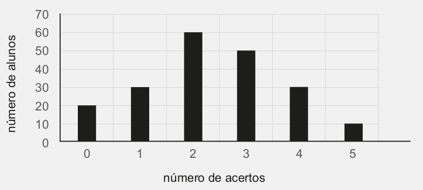a) apenas 10% do total de alunos acertaram todas as questões.
b) a maioria dos alunos acertou mais de 2 questões.
c) menos de 200 alunos fizeram a prova.
d) 40 alunos acertaram pelo menos 4 questões.
e) 40 alunos acertaram pelo menos 4 questões.
244
UNIDADE 7 - CAPÍTULO 3
PROBABILIDADE E ESTATÍSTICA
► Análise e construção do gráfico de setores
Um dos fatos importantes que serve para organizar a vida e diminuir a correria do dia a dia é saber administrar o tempo. Fazendo isso, podemos nos organizar melhor e ter uma vida mais bem planejada.
O primeiro passo para isso é verificar como utilizamos o nosso tempo, para saber se há um equilíbrio entre responsabilidades, família e lazer.
Veja o resultado de uma pesquisa sobre como um adolescente administra seu tempo ao longo do dia. Os dados dessa pesquisa foram organizados na tabela abaixo.
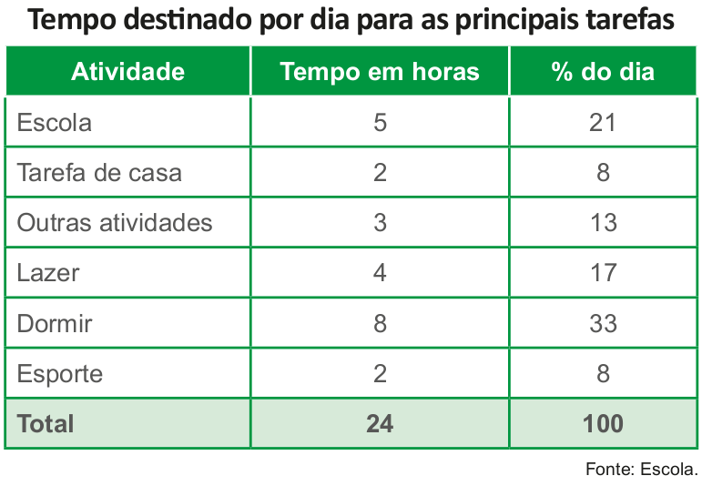A seguir, vamos representar os dados da tabela em um gráfico de setores.
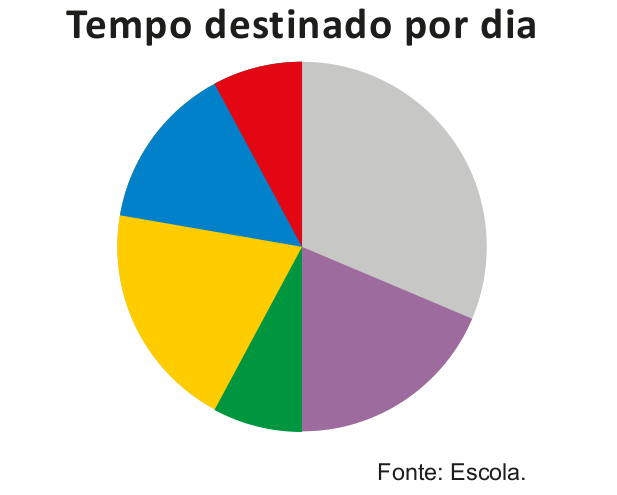
1. Troque ideias com um colega e indiquem qual cor representa cada uma das atividades presentes na tabela. Em seguida, expliquem como vocês identificaram essas cores.
245
UNIDADE 7 - CAPÍTULO 3
No gráfico anterior, cada região colorida do círculo denomina-se setor circular. Nesse caso, o círculo foi dividido em 6 setores circulares, sendo que a medida do ângulo central de cada setor é proporcional à parte em que o setor representa no todo. Observe:
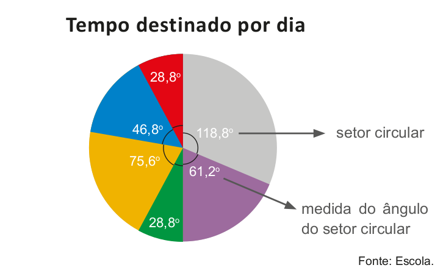Agora, vamos verificar como construir um gráfico de setores.
A tabela abaixo mostra o número de escoteiros de um grupo, de acordo com a faixa etária. Vamos representar os dados dessa tabela num gráfico de setores.
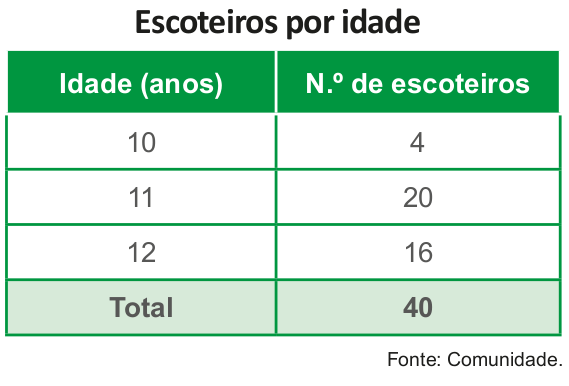1.° passo
O gráfico de setores tem a forma de um círculo. Então, utilizando um compasso, desenhamos uma circunferência.
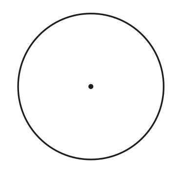2.° passo
Desenhamos um segmento ligando o centro da circunferência a um ponto qualquer da circunferência.
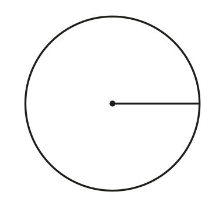246
UNIDADE 7 - CAPÍTULO 3
3.° passo
Para determinar a medida do ângulo de cada setor, em graus, que deverá ser proporcional ao número de escoteiros indicados na tabela, usaremos a regra de três. Começaremos pelo grupo de 4 escoteiros, com 10 anos de idade, associando-os com o total de 40 escoteiros.
Como uma volta completa equivale a 360° e o total de escoteiros do grupo é 40, temos:
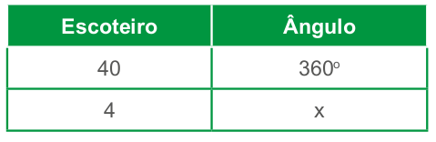\(\dfrac{40}{4} = \dfrac{360°}{x}\)
40x = 4 · 360°
40x = 1 440°
x = \(\dfrac{1440°}{40}\)
x = 36°
Logo, a quantidade de 4 escoteiros corresponde a um setor com um ângulo que mede 36°. Utilizando o transferidor, marcamos a medida do ângulo e traçamos o segmento do centro até a circunferência.
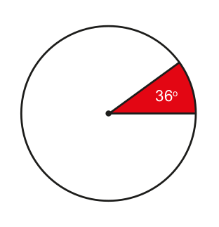4.° passo
Vamos determinar a medida do ângulo do próximo setor, que corresponde a 20 escoteiros.
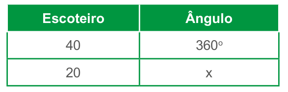\(\dfrac{40}{20} = \dfrac{360°}{x}\)
40x = 20 · 360°
40x = 7 200°
x = \(\dfrac{7 200°}{40}\)
x = 180°
247
UNIDADE 7 - CAPÍTULO 3
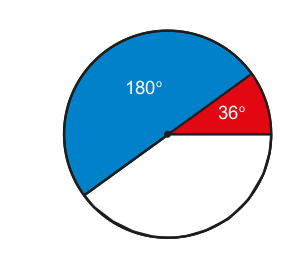Traçamos o próximo setor com 180°, que representará 20 escoteiros.
Como esse gráfico possui apenas 3 dados, teremos somente 3 setores. Por isso, a montagem dele está pronta. Agora, é só inserir as informações em forma de porcentagem.
Determinando as porcentagens de cada setor, temos:
► 4 escoteiros de 10 anos de idade entre os 40 escoteiros. Então:
\(\dfrac{4}{40} = \dfrac{1}{10} = \dfrac{10}{100} \)= 10%
► 20 escoteiros de 11 anos de idade entre os 40 escoteiros. Então:
\(\dfrac{20}{40} = \dfrac{1}{2} = \dfrac{50}{100} \)= 50%
► 16 escoteiros de 12 anos de idade entre os 40 escoteiros. Então:
\(\dfrac{16}{40} = \dfrac{4}{10} = \dfrac{40}{100} \)= 40%
Assim, temos o gráfico a seguir:
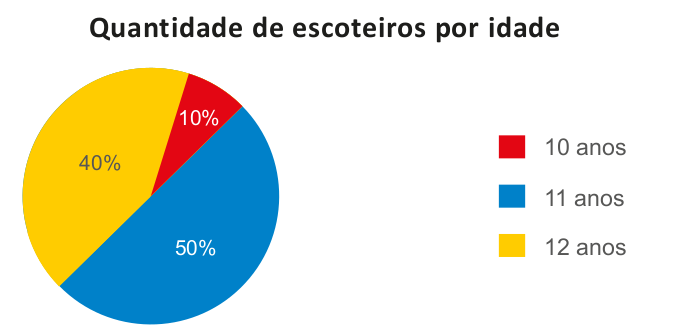248
UNIDADE 7 - CAPÍTULO 3
2. Construam, no caderno, um gráfico de setores que represente os seguintes dados:
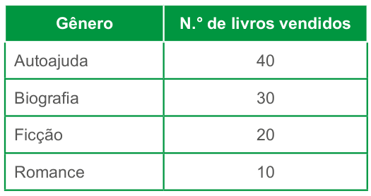3. Construa uma tabela de acordo com as informações contidas no gráfico a seguir. Informe a quantidade de votos que cada candidato recebeu, sabendo que foram 2 000 votos no total.
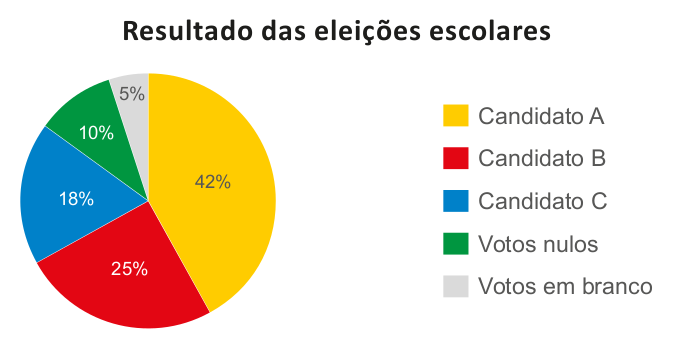4. O gráfico a seguir ilustra a distribuição do consumo de energia elétrica em um determinado estado.
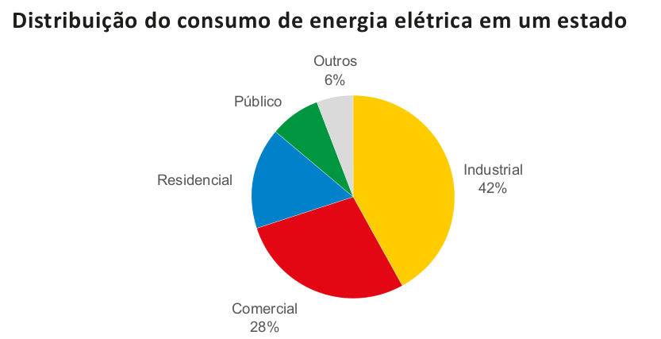Determine a porcentagem de consumo no setor residencial e público, sabendo que o consumo do setor residencial equivale ao dobro do público.
249
UNIDADE 7 - CAPÍTULO 3
5. Como você passa o tempo? E o seu amigo? Elaborem uma tabela com os dados levantados e, em seguida, construam um gráfico de setores que mostre como você e seu amigo passam o dia. Verifiquem se o tempo que vocês dispõem está sendo bem utilizado.

RELEMBRE
1. (ENEM) Em um certo teatro, as poltronas são divididas em setores. A figura apresenta a vista do setor 3 desse teatro, no qual as cadeiras escuras estão reservadas e as claras não foram vendidas.
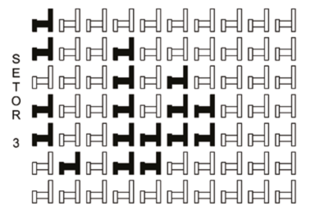A razão que representa a quantidade de cadeiras reservadas do setor 3 em relação ao total de cadeiras desse mesmo setor é
a) \(\dfrac{17}{70}\)
b) \(\dfrac{17}{53}\)
c) \(\dfrac{57}{70}\)
d) \(\dfrac{53}{17}\)
e) \(\dfrac{70}{17}\)
2. Em seu caderno, escreva a razão que corresponde:
a) 15 dias em relação ao mês de janeiro;
b) 9 minutos em relação a 1 hora;
c) 45º em relação a 360º;
d) 2 meses em relação a 1 semestre.
3. (ENEM) Qual é o limite do corpo humano? O maratonista original, o grego da lenda, morreu de fadiga por ter corrido 42 quilômetros. O americano Dean Karnazes, cruzando sozinho as planícies da Califórnia, conseguiu correr dez vezes mais em 75 horas. Um professor de Educação Física, ao discutir com a turma o texto sobre a capacidade do maratonista americano, desenhou na lousa uma pista reta de 60 centímetros, que representaria o percurso referido.
Se o percurso de Dean Karnazes fosse também em uma pista reta, qual seria a escala entre a pista feita pelo professor e a percorrida pelo atleta?
a) 1 : 700
b) 1 : 7 000
c) 1 : 70 000
d) 1 : 700 000
e) 1 : 7 000 000
250
UNIDADE 7 - CAPÍTULO 3
4. Aplicando a propriedade fundamental da proporção, em seu caderno, determine o valor de x.
a) \(\dfrac{1}{3x} = \dfrac{4}{288}\)
b) \(\dfrac{2}{x + 1} = \dfrac{5}{8}\)
c) \(\dfrac{x + 3}{10} = \dfrac{2x}{14}\)
d) \(\dfrac{7}{x - 2} = \dfrac{10}{3}\)
5. Com o auxílio de uma régua, meça as medidas dos lados do triângulo ABC e DEF e escreva em seu caderno.

a) Determine a razão entre a medida do lado:
► \(\overline{AB}\) e a medida do lado \(\overline{DE}\) ;
► \(\overline{BC}\) e a medida do lado \(\overline{EF}\) ;
► \(\overline{AC}\) e a medida do lado \(\overline{DF}\) .
b) As medidas dos lados do triângulo ABC são proporcionais às medidas do triângulo DEF? Explique.
6. Um profissional recebe R$ 16,50 por hora trabalhada. Neste mês o seu salário foi de R$ 1.584,00. Quantas horas ele trabalhou?
7. Quatro torneiras abertas enchem um tanque em 60 minutos. Quantas torneiras iguais a essas seriam necessárias para encher o tanque em 40 minutos?
8. (ENEM) Para uma atividade realizada no laboratório de Matemática, um aluno precisa construir uma maquete da quadra de esportes da escola que tem 28 m de comprimento por 12 m de largura. A maquete deverá ser construída na escala de 1 : 250. Que medidas de comprimento e largura, em cm, o aluno utilizará na construção da maquete?
a) 4,8 e 11,2
b) 7,0 e 3,0
c) 11,2 e 4,8
d) 28,0 e 12,0
e) 30,0 e 70,0
251
UNIDADE 7 - CAPÍTULO 3
9. (ENEM) No monte de Cerro Armazones, no deserto de Atacama, no Chile, ficará o maior telescópio da superfície terrestre, o Telescópio Europeu Extremamente Grande (E-ELT). O E-ELT terá um espelho primário de 42 m de diâmetro, “o maior olho do mundo voltado para o céu”.
Ao ler esse texto em uma sala de aula, uma professora fez uma suposição de que o diâmetro do olho humano mede aproximadamente 2,1 cm. Qual a razão entre o diâmetro aproximado do olho humano, suposto pela professora, e o diâmetro do espelho primário do telescópio citado?
a) 1 : 20
b) 1 : 100
c) 1 : 200
d) 1 : 1 000
e) 1 : 2 000
10. (ENEM) Moradores de três cidades, aqui chamadas de X, Y e Z, foram indagados quanto aos tipos de poluição que mais afligiam as suas áreas urbanas. Nos gráficos abaixo estão representadas as porcentagens de reclamações sobre cada tipo de poluição ambiental.
![Imagem 1: Três gráficos de pizza, cada um deles representando uma Cidade, denominadas X, Y e Z, apresentam os tipos de poluição que mais afligem as áreas urbanas das respectivas Cidades.
Legenda: Vermelho: lixo; amarelo: poluição do ar; roxo: esgoto aberto; verde: dejetos tóxicos; azul: poluição sonora. Em sentido horário, os dados são:
Cidade X: Lixo: 24%; poluição do ar: 0%; esgoto aberto: 12%; dejetos tóxicos: 34%; poluição sonora: 30%;
Cidade Y: Lixo: 40%; poluição do ar: 13%; esgoto aberto: 2%; dejetos tóxicos: 23%; poluição sonora: 22%;
Cidade Z: Lixo: 22%; poluição do ar: 23%; esgoto aberto: 36%; dejetos tóxicos: 12%; poluição sonora: 7%;](../../resources/images/unidade7/capitulo3/imagem28.png)
Considerando a queixa principal dos cidadãos de cada cidade, a primeira medida de combate à poluição em cada uma delas seria, respectivamente:
![Imagem 2: Tabela de medidas de combate à poluição, com quatro colunas e 5 linhas. Título das colunas: prioridade, X, Y, Z. Primeira linha: a, manejamento de lixo, esgotamento sanitário, controle de emissão de gases; Segunda linha: b, controle de despejo industrial, manejamento de lixo, controle de emissão de gases; Terceira linha: c, manejamento de lixo, esgotamento sanitário, controle de despejo industrial; Quarta linha: d, controle de emissão de gases, controle de despejo industrial, esgotamento sanitário; Quinta linha: e, controle de despejo industrial, manejamento de lixo, esgotamento sanitário.](../../resources/images/unidade7/capitulo3/imagem29.png)
252
UNIDADE 7 - CAPÍTULO 3
11. (UFRJ) Dois estados do país, num certo ano, produzem os mesmos tipos de grão. Os gráficos de setor a seguir ilustram a relação entre a produção de cada tipo de grão de um estado e a produção total desse mesmo estado.
![Dois gráficos circulares de setores. O da direita nomeado de Estado I tem a maior parte em vermelho. A segunda parte maior é verde. A terceira e a quarta têm o mesmo tamanho. O gráfico da esquerda nomeado de Estado II. Tem o espaço maior em verde, seguido de vermelho, azul e amarelo. As cores verde e amarelo ocupam 50% do gráfico. À direita dos gráficos, uma legenda de cores. Vermelho: Feijão. Azul: Milho. Amarelo: Soja. Verde: Trigo. Comparando os dois gráficos: feijão teve uma maior produção no Estado I. Já o trigo teve uma maior produção do Estado II. No Estado I, a soja teve uma produção pouco maior que o Estado II. No Estado I, o milho teve uma produção pouco maior que o Estado II.](../../resources/images/unidade7/capitulo3/imagem30.png)
a) Pode-se dizer que, nesse ano, o estado I produziu uma quantidade total de mi- lho maior que o estado II.
b) No estado II, nesse ano, as produções de soja e trigo, juntas, representam 50% da produção de grãos.
c) Nesse ano, a produção de soja foi igual à produção de trigo, no estado I.
d) No estado II, nesse caso, as produções de milho e feijão, juntas, foi inferior às produções de soja e trigo, juntas.
12. Assinale a alternativa correta sobre gráfico de setores.
a) Cada 1% equivale a 3,6º.
b) Cada 1% equivale a 36º.
c) Cada 10% equivalem a 3,6º.
d) Cada 5% equivalem a 12º.
13. (CMB) Lendo 30 páginas por dia, levo alguns dias para ler certo livro. Se eu lesse 24 páginas por dia, levaria 2 dias a mais. Quantas páginas tem esse livro?
a) 260
b) 340
c) 240
d) 220
e) 320
14. (PUC-SP) Para que se verifique a igualdade \(\dfrac{9}{y} = \dfrac{x}{8} = \dfrac{5}{20}\), os valores de x e y devem ser, respectivamente:
a) 2 e 5
b) \(\dfrac{1}{2}\) e \(\dfrac{1}{5}\)
c) 5 e 35
d) 2 e 36
253
UNIDADE 7 - CAPÍTULO 3
15. De cada 15 automóveis vendidos em uma concessionária, 9 são populares. O gráfico que representa essa situação é:
 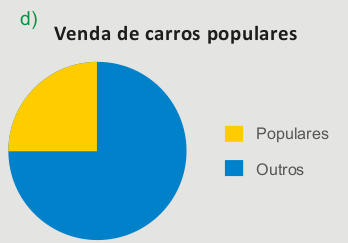
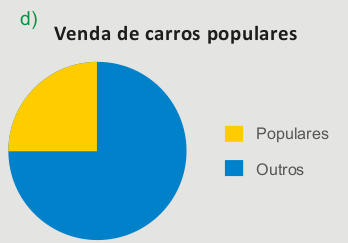
16. Em um determinado país, o turismo é a principal fonte de renda. Uma pesquisa realizada mostra a distribuição de destino dos turistas nesse país.
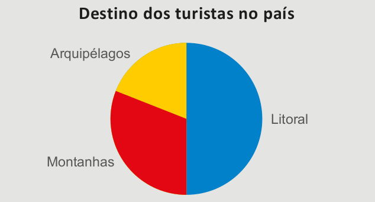Se o país recebeu 280 mil turistas durante o ano de 2012, a quantidade de turistas que se destinaram ao litoral foi:
a) 70 000 turistas.
b) 140 000 turistas.
c) 200 000 turistas.
d) 210 000 turistas.
e) 280 000 turistas.